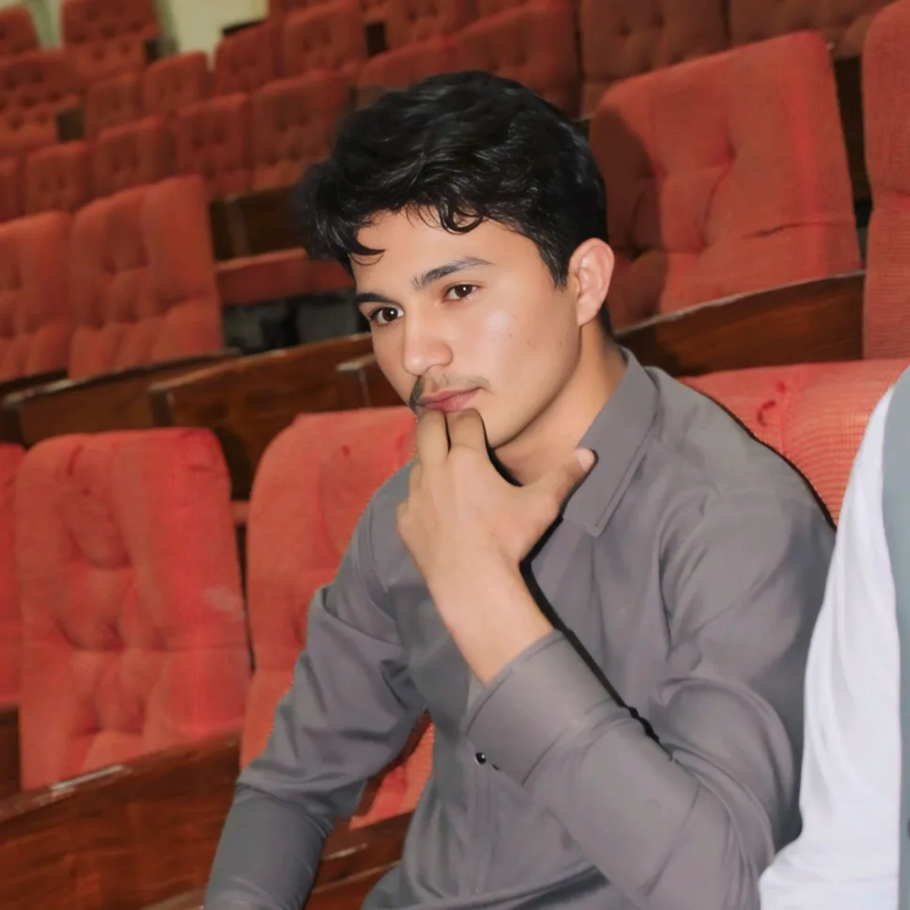

LAW • LEADERSHIP • JUSTICE
Aasim Farooq Ktk
Juris Trainee & Aspiring Advocate
A law student committed to developing a strong foundation in legal practice, advocacy, and justice, with a particular interest in criminal law.

ABOUT ME
Building a Career in Law
I am Aasim Farooq Ktk, a law student pursuing my journey toward becoming an advocate.
My academic and professional interests revolve around law, justice, advocacy, and the practical understanding of legal systems. I am particularly interested in criminal law and continue to develop the knowledge, communication skills, and professional discipline required for a career in legal practice.
I believe that a successful legal career requires more than academic knowledge. It requires integrity, critical thinking, effective communication, and a commitment to justice.
EDUCATION
Academic Journey
Law
Kohat University of Science and Technology
Developing a foundation in legal principles, legal reasoning, advocacy, and the study of law with a long-term goal of entering legal practice.
EXPERIENCE
Leadership & Engagement
Campus Ambassador
The Jurists Incubator
Engaging with a legal-focused community and contributing to student-oriented professional activities, communication, and awareness.
SKILLS
What I Bring
Legal Research
Developing the ability to research legal issues and understand relevant legal materials.
Communication
Clear communication and professional interaction in academic and legal environments.
Critical Thinking
Analyzing issues carefully and approaching problems through structured reasoning.
Leadership
Developing leadership and organizational skills through student and professional engagement.
MY VISION
Learning today.
Advocating tomorrow.
My goal is to continue learning, gain practical experience, and develop into a capable and responsible legal professional.
CONTACT
Let's Connect
Have a professional opportunity or simply want to connect?
I welcome meaningful conversations about law, education, advocacy, and professional development.